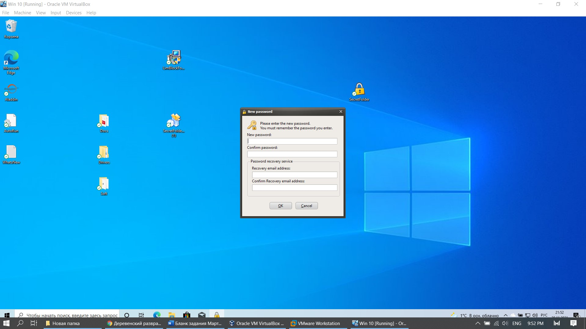

2 SecretFolder |
|
My Secret Folder – универсальное решение для защиты вашего устройства от несанкционированного доступа.
Это инструмент, с помощью которого вы сможете защитить столько папок, сколько вы хотите различными способами:
блокирование их, скрывать их, или их шифрования. Кроме того само приложение является полностью безопасным,
потому что иметь возможность доступа к нему требуется пароль. Таким образом никто не будет в состоянии увидеть папки, которые вы скрываете. |
| Установка программы состояла из 2х шагов – соглашения и выбора папки для инсталляции. Она изображена на рисунке 1. |
 |
| Рис. 1 Установка SecretFolder |
| Также как и в предыдущей программе мы видим перед собой окно для регистрации пользователя: пароль от приложения и почты для восстановления.
Регистрация изображена на рисунке 2. |
|  |
| Рис. 2 Регистрация нового пользователя |
| Далее на следующем этапе нам предстает минималистичный интерфейс, состоящий лишь из 4х кнопок. |
| 1 – Добавление папки – выбираем в проводнике папку, которую будем скрывать |
| 2 – Удаление папки, которую мы будем выбирать в программе, можно увидеть на рисунке 3 |
| 3 – Блокировка – сокрытие папки, которую нельзя даже обнаружить при помощи дополнительных инструментов или показа скрытых файлов – на рисунке 5 |
| 4 – Разблокировка – проявление скрытой папки на рисунке 4 |
 |
| Рис. 3 Интерфейс работы с папками |
 |
| Рис. 4 Обзор добавленной папки в программе и проводнике |
 |
| Рис. 5 Обзор заблокированной папки в программе и проводнике |
| Вывод: Удобный интерфейс ограниченный четыремя кнопками. Программа бесплатна и быстра в установке, но для защиты
мы используем папки, но проблема в том, что скрытые в им объекты никак не защищены, текстовые файлы можно читать прямо из редактора, выставив соответствующую кодировку. |